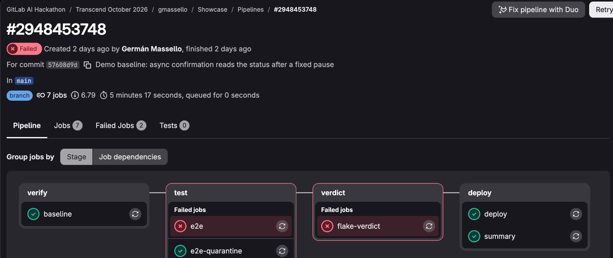
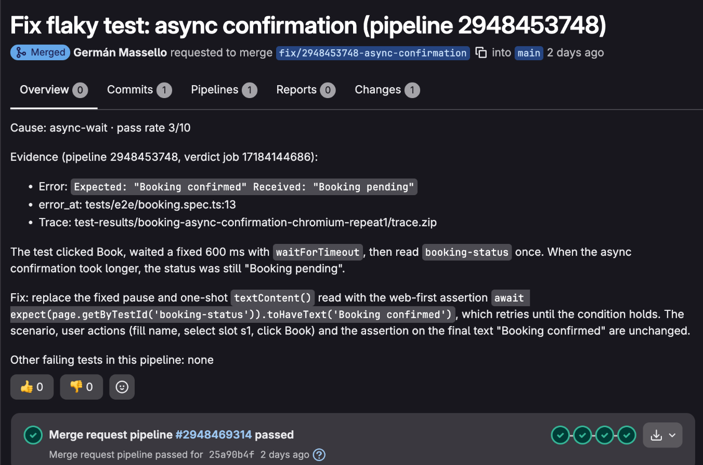

A hands-off GitLab Duo flow
Plumb
When a test turns your main pipeline red, Plumb finds out whether it is a real bug or a test that fails by chance, fixes it, and merges the fix itself, with no person, only after it passes 50 times in a row.
The problem
A red pipeline is not always a bug
Some tests fail only sometimes: they wait a fixed time for something that is usually, but not always, ready. The team learns to press "retry". The red goes away, the bad test stays, and one day a real bug hides behind the same habit.
At Google, about 84% of the times a test went from passing to failing, the test was flaky, not the code.
So the developer who opens a red pipeline is usually chasing noise, and loses time reading logs that point to no bug.
The test in our demo passed 3 of 10 tries. Nothing in the app was broken.
The usual answers are to press retry, or to set the test aside with a note for someone to fix later. GitLab's own testing guide does both. Plumb writes the fix, proves it with 50 runs, and sets the test aside only when the proof fails.
How it works
The pipeline decides, the agent fixes
Every decision that can be counted is made by the pipeline, with fixed rules. The AI agent does what it is good at: reading the failure and writing the fix. It never decides alone what goes into main.
- 1
Pipeline turns red
A test fails on main.
- 2
Try it 10 times
flake-verdict re-runs the test. Any pass means it fails by chance; 10 fails means it is really broken. A test file that does not even load counts as really broken too.
- 3
The agent steps in
The GitLab Duo flow starts by itself, finds the cause and writes a fix in a merge request.
- 4
Prove it 50 times
fix-proof runs the fixed test 50 times. merge-gate lets it in only if all 50 pass and the change touches nothing but tests. A change to the app itself waits for a person.
- 5
Ship and report
The app deploys to Google Cloud Run and a note on the failed commit explains what happened.
Nobody approves each step: you set the rules once and walk away. Along the way Plumb touches all 9 stages of the DevSecOps cycle: plan, create, verify, package, secure, release, configure, monitor and govern.
The real run
From red to green in 9 min 47 s, with no human




Every case
What happens depends on why it failed
Each row is a real pipeline you can open.
| Case | What Plumb did | How it ended | Pipeline |
|---|---|---|---|
| Fails by chance | Fixed the wait in !10 | 50/50, merged, deployed | 2948453748 |
| Fails by chance, fix not good enough | Tried a fix in !9 | Only 33/50, so it was not merged: the test was set aside (quarantined) for 14 days instead | 2944554222 |
| Fails because of another test | Restored the cleanup in !12 | 50/50, merged | 2957810765 |
| The code really broke | Opened issue #10 with the change that broke it | No code touched: a person decides | 2953211821 |
| The app changed on purpose | Updated the test in !6 | 50/50, waits for a person | 2944391258 |
| The CI settings changed | Opened issue #8 naming the setting | No code touched | 2944325042 |
| Missing test data | Made the test create its own data in !7 | 50/50, merged | 2944438629 |
| Fixed twice and broke again | Did not try a third fix: set the test aside in !13 | Merged, with its history quoted | 2957860653 |
Results
Numbers you can check
Every number links to the command or record it comes from.
Honest limits
What it does not do yet
- It fixes one test per pipeline. Other failing tests are listed, not fixed.
- For tests that always fail, the AI picks the cause. It cannot merge anything: only the pipeline merges, after 50 of 50, and only changes to tests.
- A test set aside (quarantined) stays aside until a person removes it, even after its date passes. At most 2 can be set aside; a third stops the pipeline.
- History is matched by the exact test name, so a renamed test starts from zero.
- The demo app keeps bookings in memory and its API has no login. Only the button that wipes the test data needs a key.
Try it